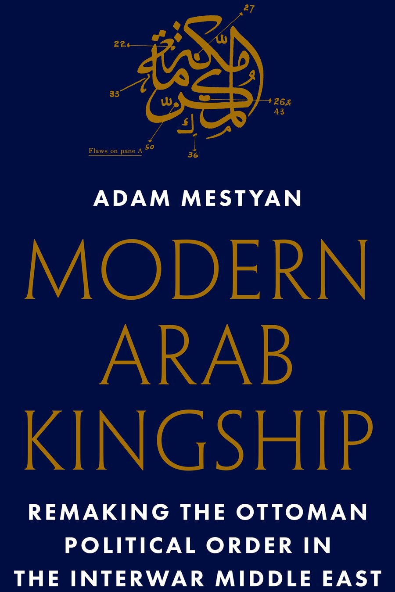
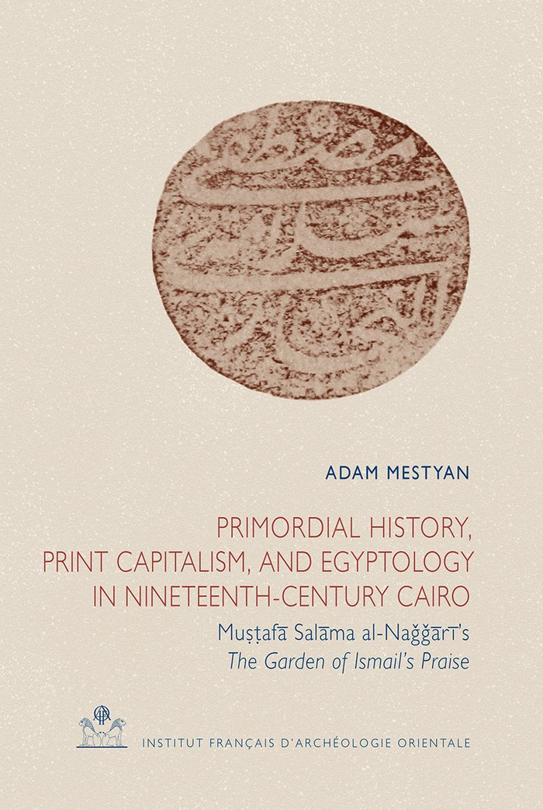
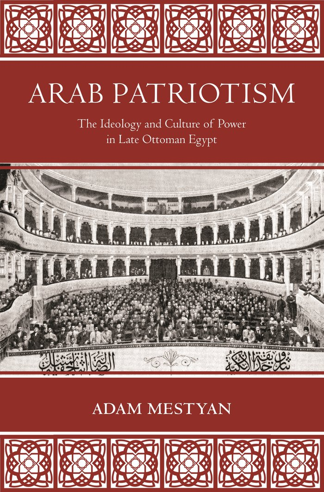

أدرس تاريخ الشرق الأوسط الحديث، لا سيما الولايات العربية في أواخر العهد العثماني والدول التي خلفتها. يتناول بحثي الحالي كيف أثرت العولمة والحرب تشكيل بنية الدولة والحياة الاقتصادية في المناطق ما بعد العثمانية، وخاصة في مصر وسوريا. في جامعة هارفارد، أُدرّس في قسم اللغات والحضارات الشرقية الأدنى بصفتي "أستاذ مؤسسة فورد" لدراسات الشرق الاوسط. الآن، أنا في إجازة تفرغ علمي للعام الجامعي 2026–2027 كزميل غوغنهايم وأستاذ زائر في جامعة (Sciences Po) في باريس.
مرحبًا، أنا مؤرخ للشرق الأوسط الحديث وعازف باص متقاعد في فرقة بانك شامانية في أوروبا الشرقية. وكنت شاعرًا في وقت من الأوقات أيضًا. تخرجت من جامعة إلته (ELTE) والجامعة الأوروبية الوسطى (CEU) في بودابست، ودرّست في جامعة أكسفورد وجامعة ديوك، والآن في جامعة هارفارد.
وُلدت ونشأت في المجر، من عائلة هي مزيج من الأصول الألمانية والمجرية والسلافية — وأبعد من ذلك، جدة عليا من اليونان، وهذا أقرب ما تصل إليه شجرة عائلتي إلى الشرق الأوسط. لا، لست أرمنيًا.
المزيد عني ←
إعادة تشكيل النظام السياسي العثماني في الشرق الأوسط بين الحربين العالميتين.

دراسة تاريخ مصغّر لمثقف وشاعر مصري منسي، هو مصطفى سلامة النجاري.

أيديولوجيا وثقافة السلطة في مصر العثمانية المتأخرة.